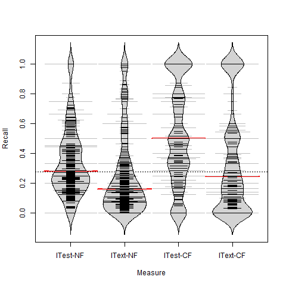

Predicting code changes based on automated acceptance tests
Home
Evaluation Results
RQ1
RQ2
RQ3
RQ4
Samples
Projects selection
Tasks selection
Sample of 77 tasks
Sample of 315 tasks
Home
RQ4
RQ4: Does ITest is a better code change predictor than IText?
ITest can predict more changes than IText

IText is a more precise predictor than ITest
Wilcoxon Signed-Rank test applied to precision and recall measures of ITest and IText
Hypothesis
pvalue
r
ITest-NF precision = IText-NF precision
1.3e-26
0.60
ITest-NF recall = IText-NF recall
3.1e-07
0.29
ITest-CF precision = IText-CF precision
8.6e-14
0.42
ITest-CF recall = IText-CF recall
1.4e-11
0.38